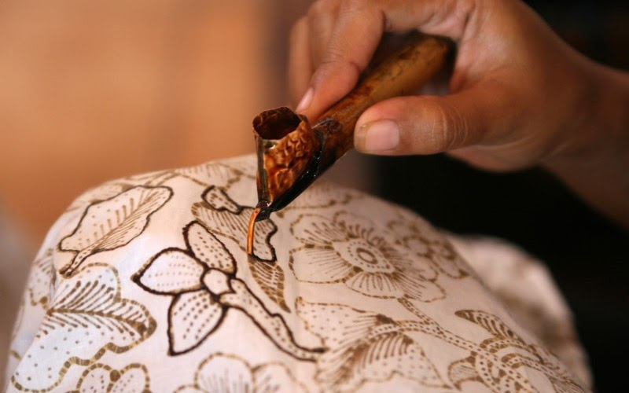
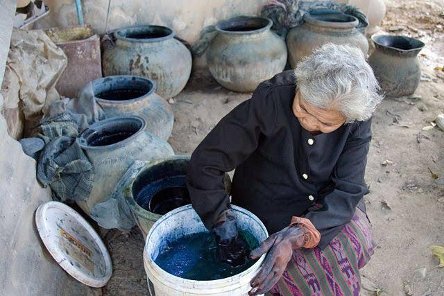
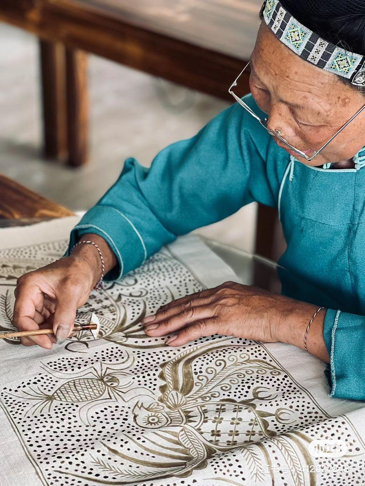
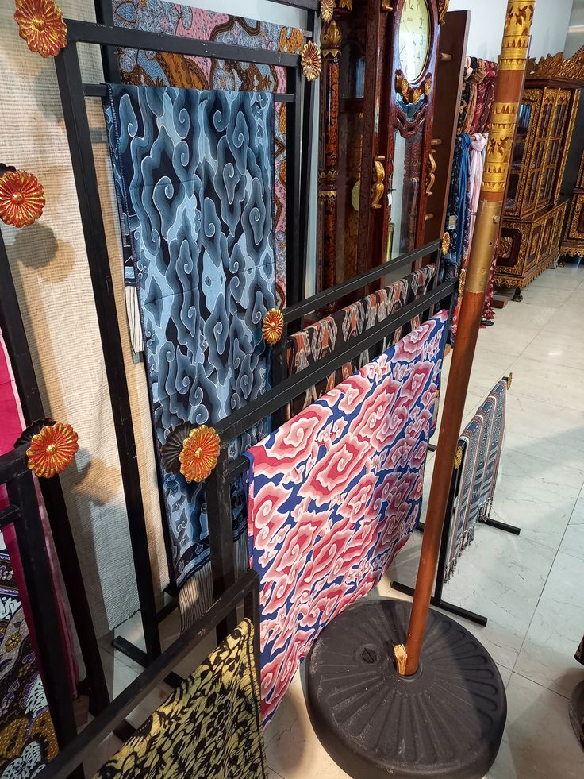
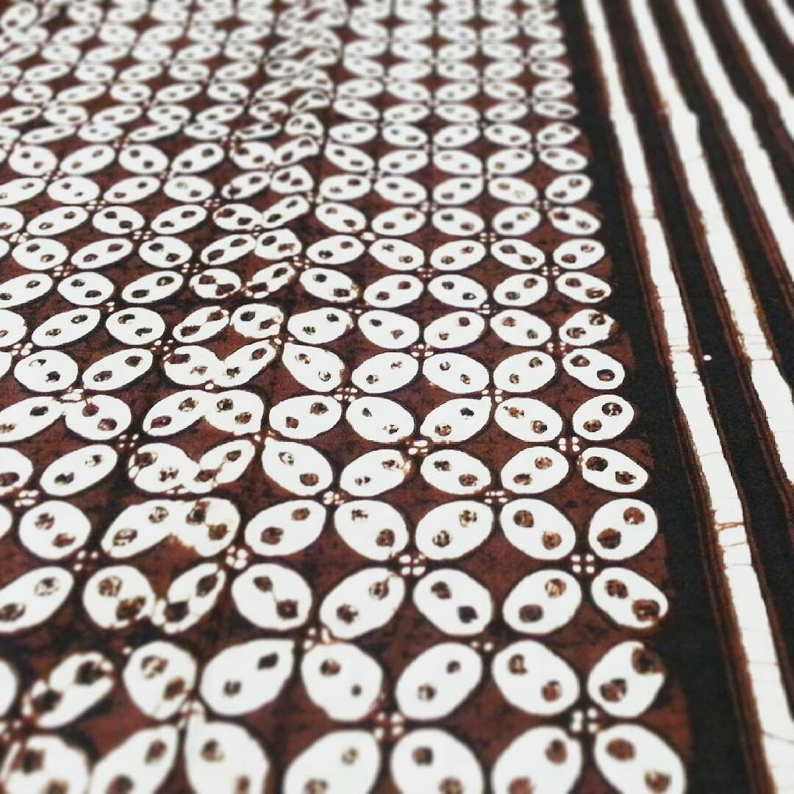
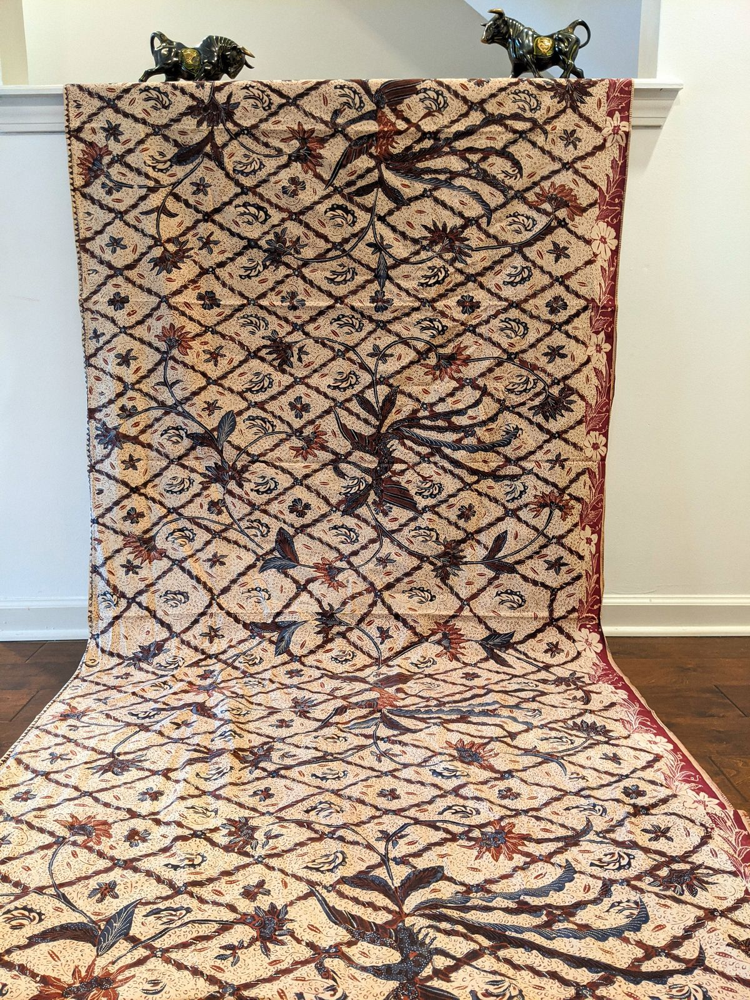
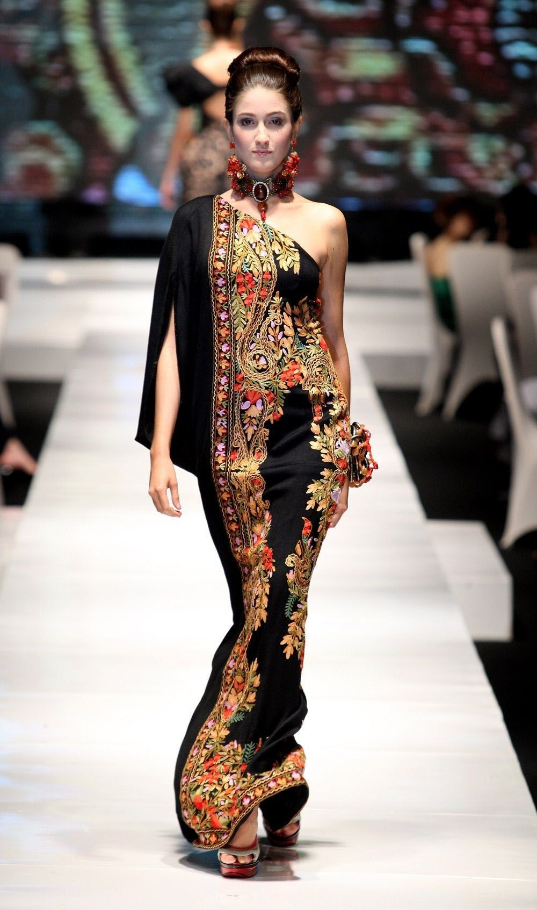
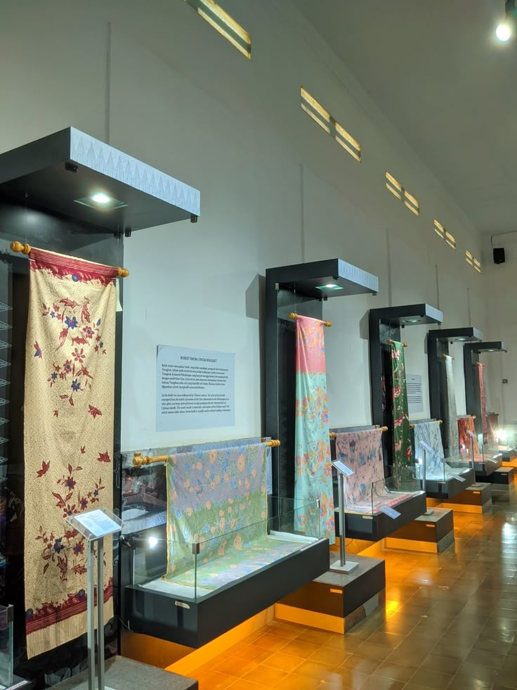
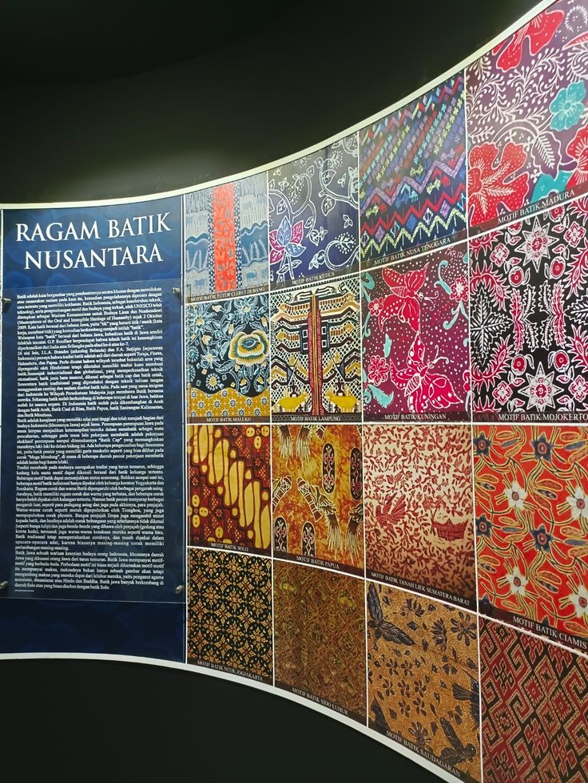

Keindahan yang tertangkap dalam setiap momen
Dari kain polos menjadi karya seni yang indah



Keindahan motif dari berbagai daerah Nusantara



Kami bangga membawa batik ke panggung dunia


